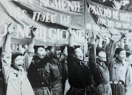
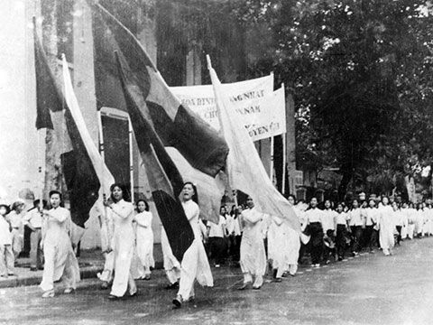
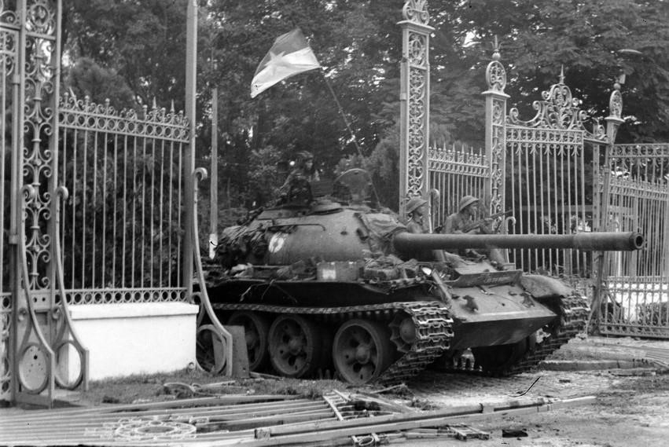
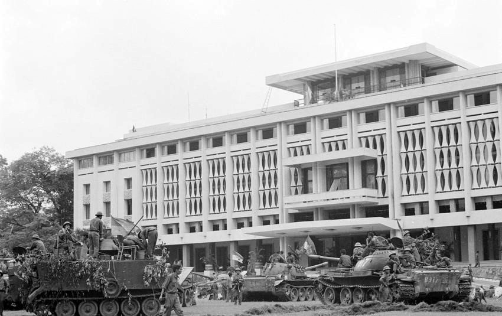
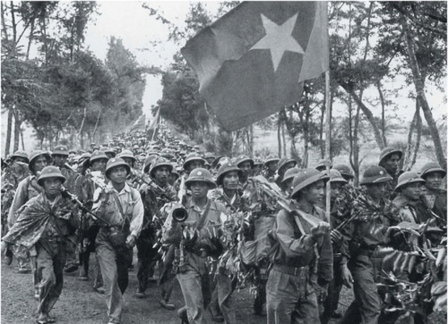
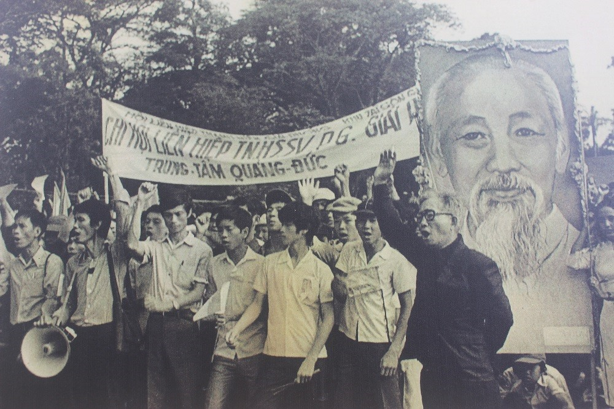
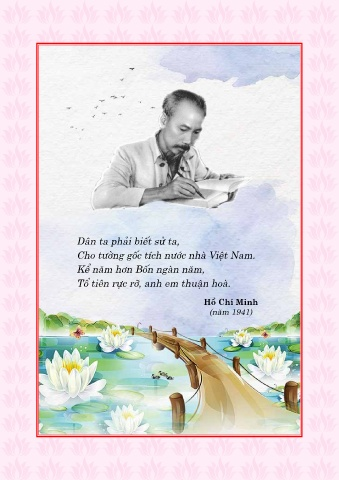

CÂU NÓI HAY VÀ SÂU ĐẬM CỦA BÁC HỒ

Lời tiên tri của Bác
Năm 1941 – Trong cuối quyển Lịch sử Việt Nam (Bác viết
bằng thơ lục bát tại Pác Bó, Cao Bằng, năm 1941), Người ghi rõ:
“Việt Nam độc lập 1945.”

⇒ Đây là lời tiên đoán sớm nhất, và cũng là một trong những lời tiên tri chính xác nhất: đúng năm 1945, Cách mạng Tháng Tám thành công, nước Việt Nam Dân chủ Cộng hòa ra đời.
Ngày 10-5-1941 – Tại Hội nghị Trung ương 8 Đảng Cộng sản Đông Dương, Bác Hồ nói:
“Nếu sau
chiến tranh thế giới lần thứ nhất xuất hiện nước xã hội chủ nghĩa đầu tiên là Liên Xô, thì
cuộc chiến tranh đế quốc lần này sẽ làm cho cách mạng nhiều nước thành công, sẽ có thêm
nhiều nước xã hội chủ nghĩa ra đời.”
 ⇒ Lời tiên đoán này sau trở thành
hiện thực khi sau Chiến tranh thế giới thứ hai, hàng loạt
nước xã hội chủ nghĩa xuất hiện ở Đông Âu và châu Á.
⇒ Lời tiên đoán này sau trở thành
hiện thực khi sau Chiến tranh thế giới thứ hai, hàng loạt
nước xã hội chủ nghĩa xuất hiện ở Đông Âu và châu Á.
Trong thư chúc Tết đầu năm 1942, Bác viết:
“Ta có thể quyết đoán rằng: Nga nhất định thắng,
Anh, Mỹ sẽ được, Nhật Bản sẽ thua. Đó là một dịp rất tốt cho dân ta khởi nghĩa, đánh đuổi
Pháp – Nhật, làm cho Tổ quốc ta được Độc lập, Tự do.”
⇒ Quả đúng như vậy: phe phát xít thất bại, mở ra thời cơ Cách mạng Tháng Tám năm 1945.

Năm 1953 – Lẩy Kiều tiên đoán chiến thắng Điện Biên Phủ. Khi kết thúc Hội nghị bàn về thuế
nông nghiệp, luật sư Phan Anh lẩy Kiều:
“Diệt thù giải phóng quê ta,
Ấy là nghĩa nặng, ấy là tình sâu.”
Bác Hồ tiếp lời:
“Đành lòng chờ đó ít
lâu,
Chầy ra thì cũng năm sau vội gì.”
⇒ Một năm sau (1954), chiến thắng Điện Biên Phủ lừng lẫy năm châu đúng như lời Người
nói.

Thư chúc Tết năm 1954, Bác viết:
“Sau 8, 9 năm toàn quân và toàn dân ta kháng chiến gian khổ
và anh dũng, chính nghĩa đã thắng lợi, chiến tranh đã chấm dứt, hòa bình đã lập lại... Chúng
ta phải tỉnh táo đề phòng, phải kiên quyết chống âm mưu đế quốc Mỹ tăng cường can thiệp vào
Đông Dương.”
⇒ Một dự báo chính xác về sự can thiệp của Mỹ sau này.

Thư điện ngày 4/2/1968 gửi Chủ tịch Nguyễn Hữu Thọ, Bác viết:
“Thắng lợi đầu xuân của quân và
dân miền Nam đã đưa cuộc kháng chiến chống Mỹ cứu nước của toàn dân ta đến một tình thế mới
rất có lợi.
Không có gì cứu vãn nổi sự sụp đổ hoàn toàn của giặc Mỹ và tay sai.”
⇒ Lời khẳng định chắc chắn về thắng lợi cuối cùng của dân tộc ta. 
Thơ chúc Tết Xuân Kỷ Dậu 1969, Bác viết:
“Năm qua thắng lợi vẻ vang,
Năm nay tiền tuyến chắc càng thắng to.
Vì Độc lập, vì Tự do,
Đánh cho Mỹ cút, đánh cho ngụy nhào,
Tiến lên chiến sĩ đồng bào,
Bắc Nam sum họp xuân nào vui hơn!”
⇒ Lời tiên đoán trọn vẹn: năm 1975, Bắc – Nam thật sự sum họp.
Trong Di chúc (1969), Bác viết:
“Cuộc kháng chiến chống Mỹ có thể còn kéo dài. Đồng bào ta có
thể phải hy sinh nhiều của, nhiều người. Dù sao, chúng ta phải quyết tâm đánh giặc Mỹ đến
thắng lợi hoàn toàn.
Còn non, còn nước, còn người,
Thắng giặc Mỹ, ta sẽ xây dựng hơn mười ngày nay.”
⇒ Lời tiên đoán về thắng lợi cuối cùng của dân tộc – được hiện thực hóa năm 1975.



Câu nói hay của Bác
“Con đường độc lập dân tộc gắn liền với chủ nghĩa xã hội”
“Dân ta phải biết sử ta
Cho tường gốc tích nước nhà Việt Nam"
